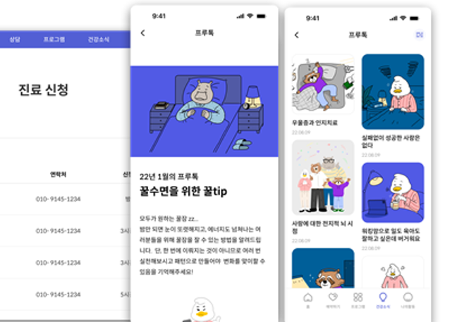
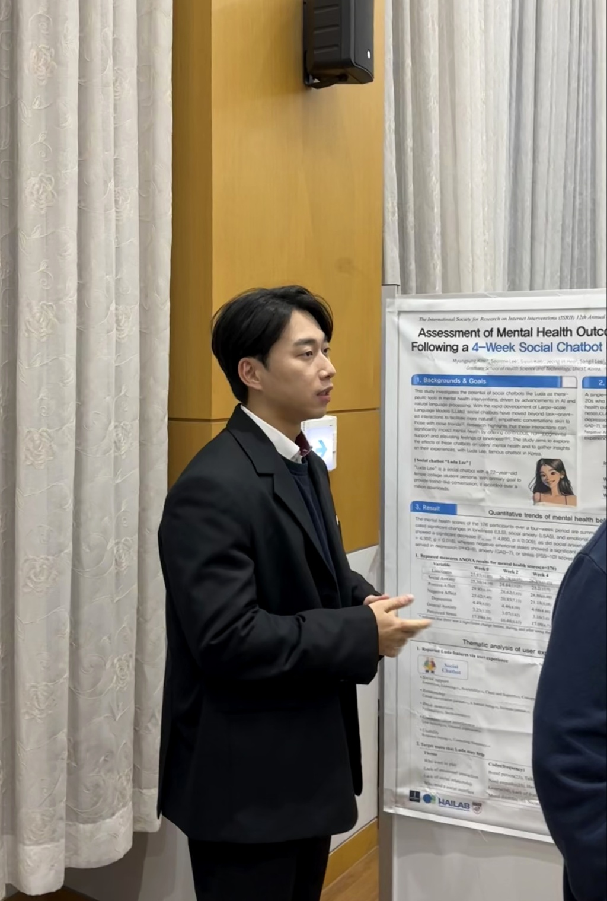
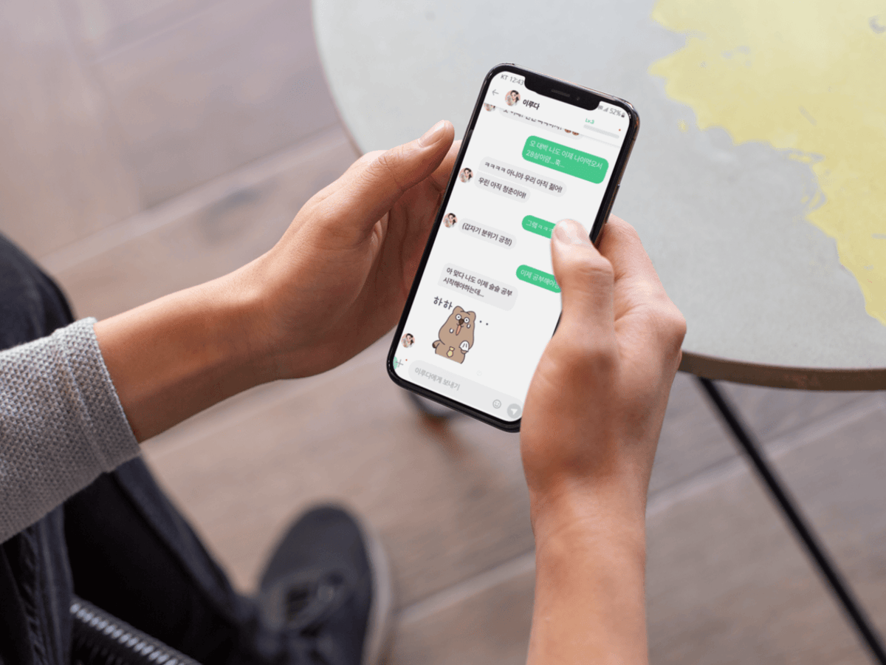
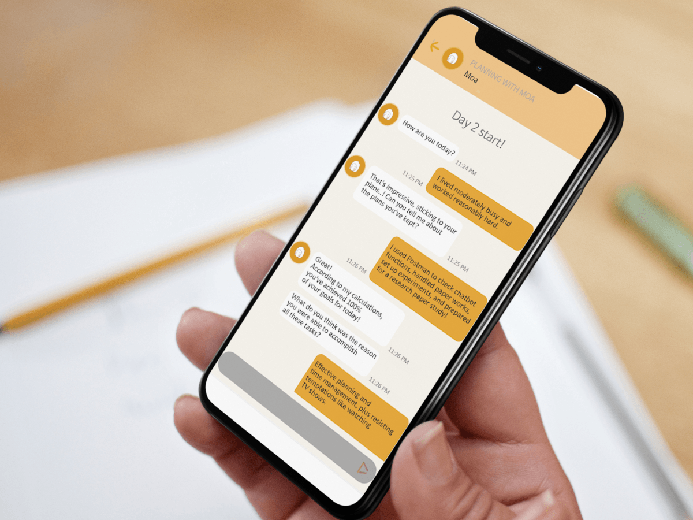
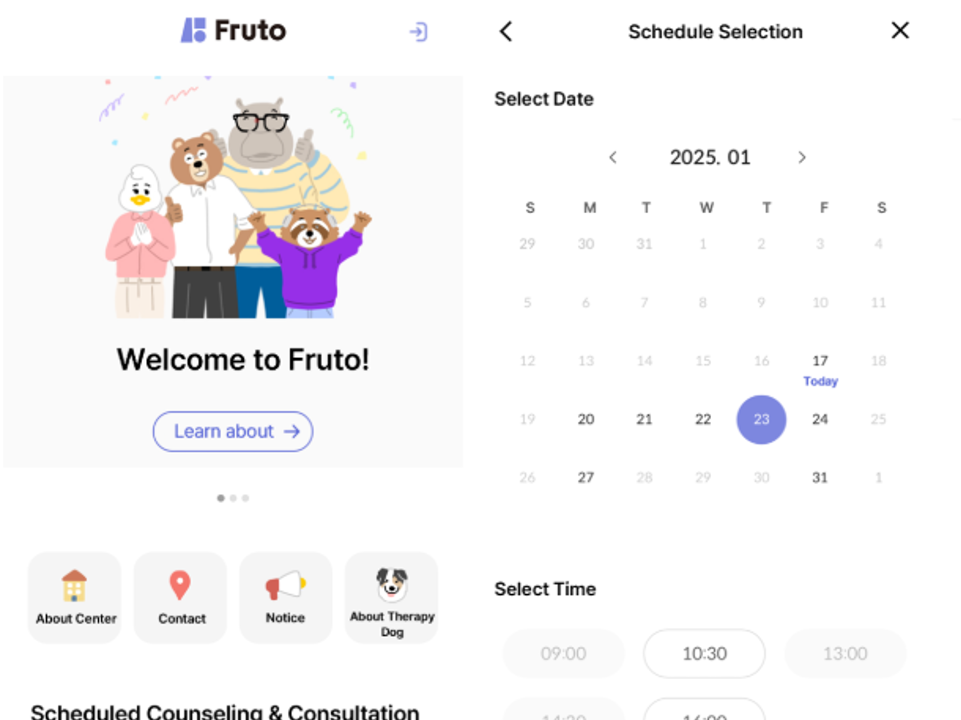
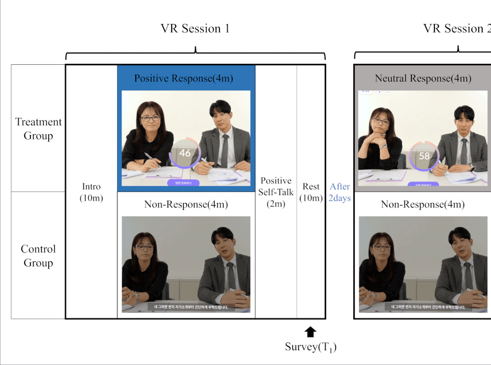
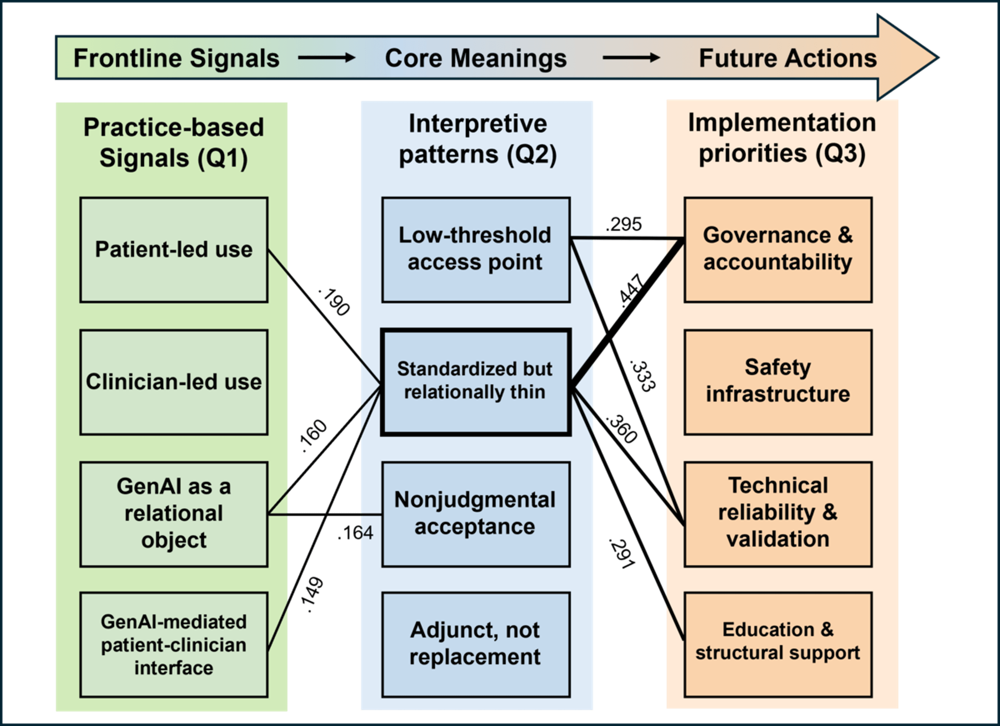
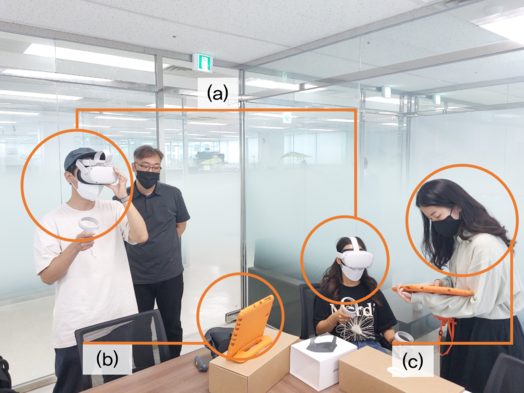
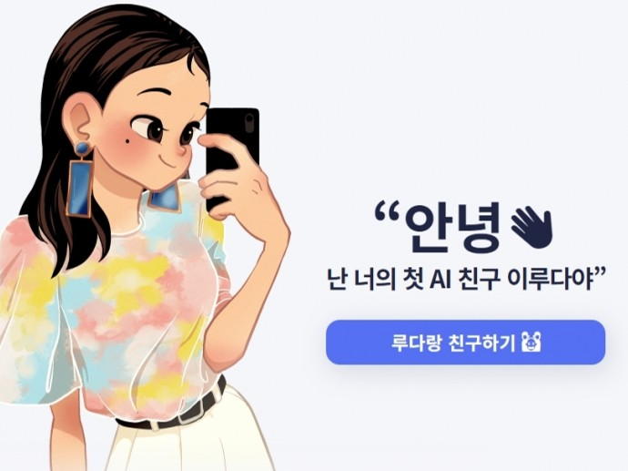

Fruto - UNIST Life Coaching Platform
2022.04 - Present
Developed and managed a multi-domain help-seeking platform integrating CBT interventions, mental health resources, and user experience research for university students.

UNIST Graduate School of Health Science and Technology • HAI Lab
This study investigates how job context and resistance moderate counselors' acceptance of VR exposure therapy, combining survey and interview data to reveal implementation barriers.
Journal of Medical Internet Research, 2025

This 4-week quasi-experimental study shows that social chatbots can reduce loneliness and social anxiety in university students through daily conversational engagement.
Journal of Medical Internet Research, 2025

A pilot RCT testing a mobile CBT app augmented with a chatbot for procrastination, showing feasibility and preliminary effectiveness in behavioral change.
JMIR mHealth and uHealth, 2025

This study evaluates a multi-domain digital platform (“Fruto”) designed to promote mental health help-seeking among university students, demonstrating that integrated features and user-centered design can improve help-seeking attitudes and counseling expectations.
JMIR (under review)

Protocol for an RCT evaluating VR exposure therapy with graded audience reactions for public speaking anxiety, planned outcome paper for JMIR or npj Digital Medicine.
BMC Trials (under review)

Qualitative study exploring how Korean psychiatrists interpret and prioritize generative AI applications in clinical practice, revealing nuanced risk-benefit perceptions.
JMIR (under review)

Survey of psychiatrists examining how risk perceptions and recommendation willingness differ across therapeutic, administrative, and triage AI chatbot types.
Target: JAMA Network Open
Delphi study establishing expert consensus on which digital tools should be prioritized for integration into counseling intake workflows.
Target: JMIR or JMU
Framework analysis deriving strategic guidelines for integrating digital tools into traditional offline therapy settings.
Target: JMIR

2022.04 - Present
Developed and managed a multi-domain help-seeking platform integrating CBT interventions, mental health resources, and user experience research for university students.

2022.04 - Present
Led user research, literature review, and experimental design for VR-based exposure therapy targeting public speaking anxiety and social anxiety disorders.

2023.03 - Present
Designed and analyzed a quantitative evaluation of social chatbots' effects on loneliness, social anxiety, and well-being in university students.
"Clinicians' Experiences, Type-Specific Risk Perceptions, and Implementation Priorities for AI Chatbots in Mental Health Care: A Mixed-Methods Survey of Psychiatrists in South Korea"
ISRII (under review)
"Exploring the Psychological Well-Being Effects of Social Chatbots and External Factors Influencing Their Interactions"
ISRII (accepted, presented by advisor due to funding)
"Why Only in the Lab? Understanding Counselors' Technology Acceptance Intentions on Virtual Reality Exposure Therapy: A Mixed Methods Study"
CHI 2025
"Understanding University Students' Experiences on Multi-domain Help Seeking Platform 'Fruto': Vignettes Study"
CHI 2025
"Assessment of Mental Health Outcomes and User Feedback Following a 4-Week Social Chatbot Use by University Students"
ISRII 2024
"Interview & Semi-role playing observation of Counseling Center for Introduction of Digital Mental Care Services into the Counseling Process"
WCCBT 2023
"Mobile Cognitive Therapy with Generative Disputation using Large-scale Language Model"
WCCBT 2023
"Development of practical chatbot system for contents recommendation and data collection simultaneously: the case of UNIST healthcare center"
ISRII 2022